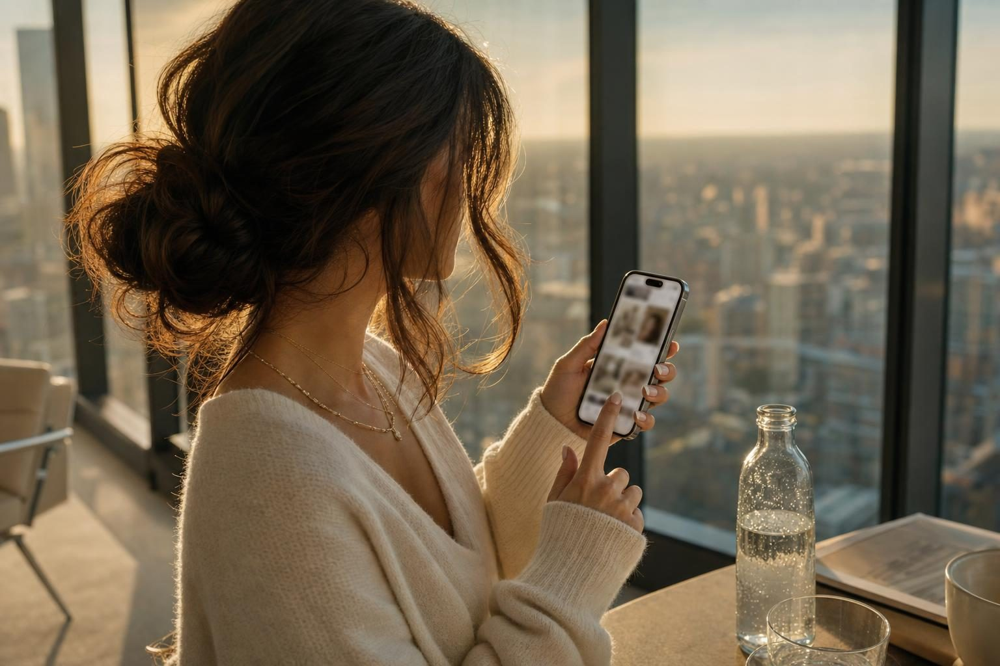
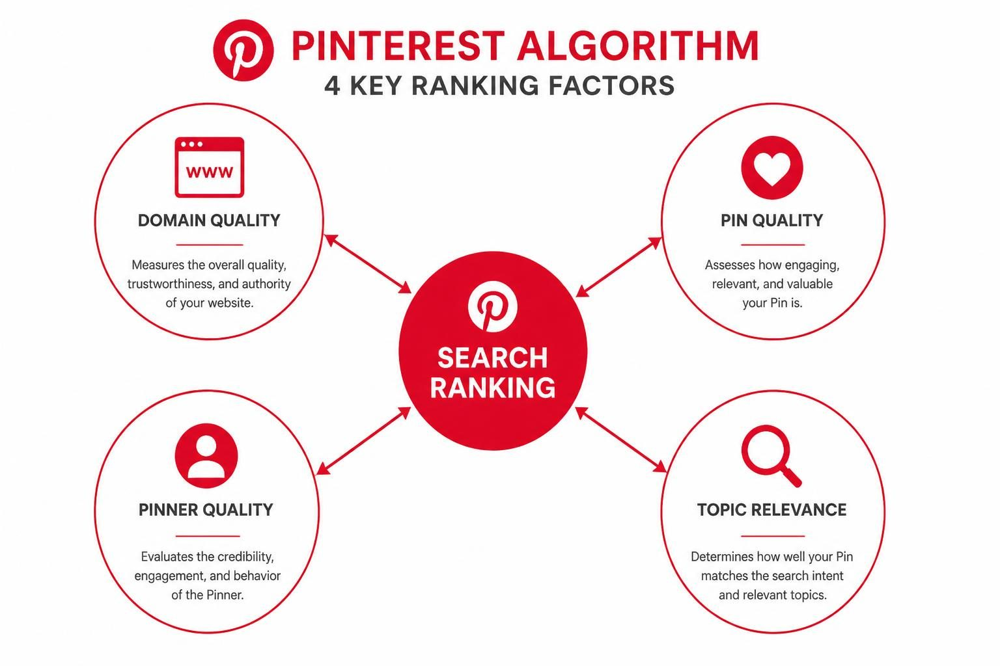
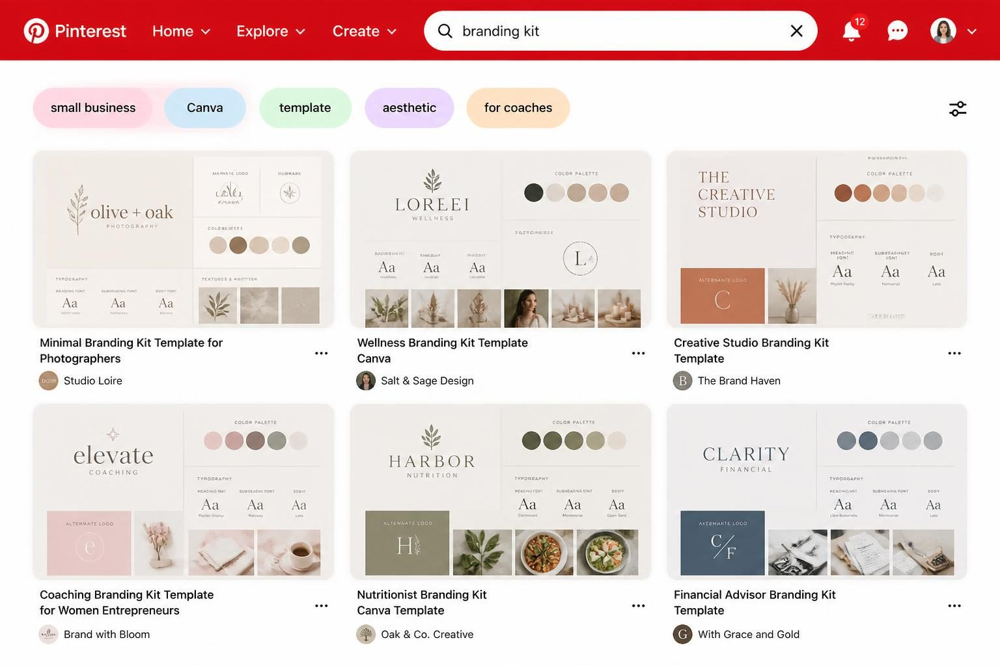
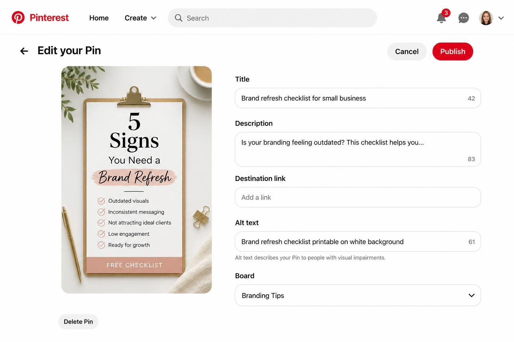
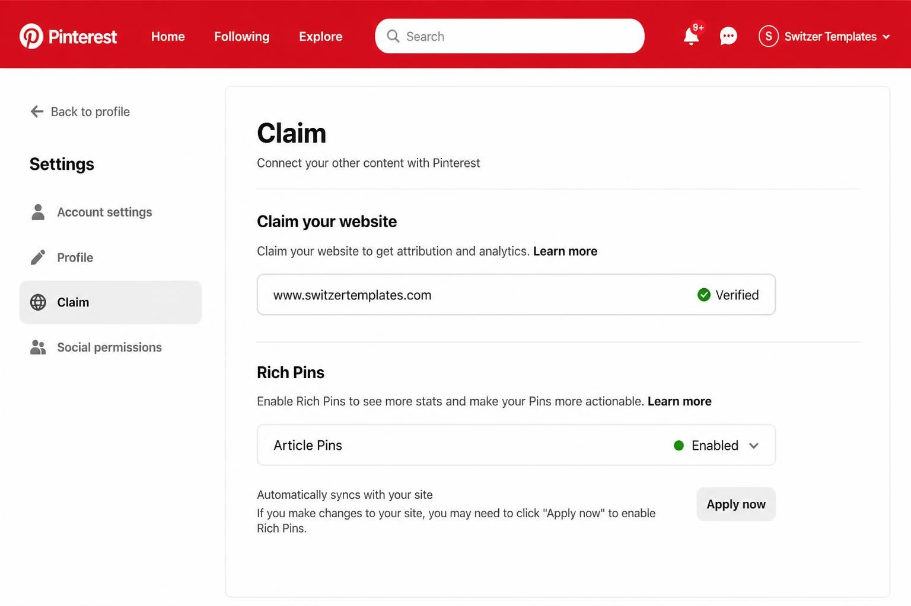
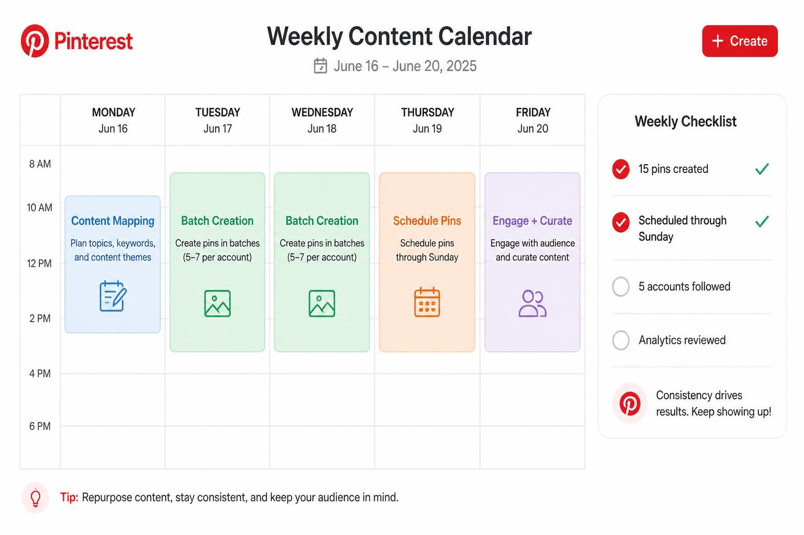

PINTEREST SEO: HOW TO GET YOUR PINS RANKING AND DRIVING TRAFFIC TO YOUR BUSINESS

Pinterest SEO is how you optimize your profile, boards, and pins so they show up when your ideal clients search for exactly what you offer. Get it right, and a single pin can send traffic to your website for months - sometimes years - without you touching it again.
But here's what most guides skip over: Pinterest SEO isn't just about stuffing keywords into descriptions and hoping for the best. The platform has four distinct ranking factors, and if you're only focusing on one of them, you're leaving traffic on the table.
I've watched business owners spend hours creating beautiful pins that never get seen. And I've watched others create simple, keyword-focused content that drives thousands of clicks. The difference isn't design talent or posting frequency. It's understanding how Pinterest actually decides what to show.
This guide breaks down the complete Pinterest SEO system - from the algorithm factors that determine ranking, to the exact keyword research method that takes five minutes, to the board structure that gets your content found. Whether you're starting fresh or wondering why your current pins aren't performing, you'll walk away with a clear action plan.
Let's get into what actually moves the needle.
HOW THE PINTEREST ALGORITHM DECIDES WHAT TO SHOW
Pinterest uses four primary factors to rank content. Understanding each one - and what specific actions improve each - is the foundation everything else builds on.
Domain quality measures how users interact with pins that link to your website. When someone clicks through to your site from a pin and stays there, Pinterest notices. When they immediately bounce back, Pinterest notices that too. This factor rewards websites that deliver on what the pin promises. A well-designed, fast-loading website with content that matches the pin's description builds domain quality over time.
Pin quality looks at how users engage with individual pins. Saves, clicks, closeups (when someone zooms in on your image), and time spent viewing all count. A pin that gets saved and clicked signals to Pinterest that it's worth showing to more people. This creates a compounding effect - early engagement leads to more distribution, which leads to more engagement.
Pinner quality evaluates your account's overall history. How consistently do you pin? How do users respond to your content over time? Accounts that post sporadically or share content that rarely gets engagement will have a harder time ranking than accounts with steady activity and proven engagement.
Topic relevance is the keyword alignment between what someone searches and what your pin contains. This includes your pin title, description, board name, and even the text on your image. Pinterest reads all of it.
Most business owners focus only on topic relevance - the keyword stuffing approach. But if your domain quality is low because your website loads slowly, or your pinner quality is weak because you haven't posted in three months, no amount of keyword optimization will save you.
The system rewards accounts that perform well across all four factors. That's why the accounts driving real traffic aren't just optimizing pins - they're building a consistent presence with a website that converts.

THE KEYWORD RESEARCH METHOD PINTEREST GIVES YOU FOR FREE
Forget third-party keyword tools for a minute. Pinterest hands you the exact terms your audience is searching - you just need to know where to look.
Start by typing your main topic into the Pinterest search bar. As you type, autocomplete suggestions appear. These aren't random - they're the actual terms real users are searching right now. If you type "business coach" and see suggestions like "business coach templates," "business coach instagram," and "business coach aesthetic," those are validated search terms worth targeting.
But the real gold comes after you hit enter.
Look at the colored bubbles that appear below the search bar. Pinterest calls this "guided search," and it's essentially the platform telling you: here are the modifiers people add to this search. If you search "branding kit" and see bubbles like "small business," "Canva," "template," and "aesthetic," you now have long-tail keyword variations handed to you.
Here's how to turn this into a systematic process:
1. Open a spreadsheet with columns: Primary Keyword, Related Terms, Content Ideas
2. Search your main topic and document all autocomplete suggestions
3. Hit enter and write down every guided search bubble that appears
4. Click through 2-3 of those bubbles and note what additional modifiers appear
5. Repeat for your next main topic
A career coach doing this exercise might find: "career change at 40," "career change for women," "career change checklist," "career change fear," "career change resume." Each of these becomes a potential board name, pin title, or content angle.
This takes five minutes and gives you more relevant keyword data than most paid tools. Pinterest is literally showing you what your ideal clients are typing. Use their exact language.
The other free resource most people ignore is Pinterest Trends. Head to trends.pinterest.com and search any topic to see real-time search volume data. You can compare terms, see seasonal patterns, and identify when interest peaks. A wedding photographer using this might learn that "fall wedding" searches actually peak in March and April - because brides plan six months ahead. That's the kind of timing insight that lets you create content before demand hits.

BOARD SEO: THE FOUNDATION MOST BUSINESS OWNERS SKIP
Before you optimize a single pin, your boards need work. Think of boards as filing cabinets that tell Pinterest what topics you're an authority on. Messy cabinets with vague labels make everything harder to find.
The most common mistake? Cute board names that mean nothing to search. "Stuff I Love" doesn't rank for anything. "Vibes" tells Pinterest nothing. "Business Inspo" is so generic it competes with millions of other boards using the same throwaway title.
Your board names should be keyword-rich phrases your ideal client would actually search. A life coach shouldn't have a board called "My Work" - they should have boards titled:
- Mindset tips for entrepreneurs
- Life coaching resources
- Goal setting worksheets
- Work life balance strategies
- Career change advice for women
Each board title is a searchable phrase. When someone searches "goal setting worksheets," your board has a chance to appear - not just individual pins, but the entire board.
Board descriptions matter too. Write 2-3 sentences that naturally include your target keywords plus related terms. Don't stuff them unnaturally - write for humans first, but make sure the language matches what your audience searches.
What about board organization?
Arrange your boards in order of business priority. Your most important services or products should be represented by boards near the top of your profile. Someone visiting your profile sees the first 6-8 boards immediately - make them count.
Board covers create visual cohesion. Select pins that represent the board's content and look professional together. This isn't just about aesthetics - it signals to visitors (and Pinterest) that you take your presence seriously.
If you have old boards that no longer fit your business - maybe from when you were pinning recipes before you became a coach - either delete them, make them secret, or rename and repurpose them. A scattered board collection with content from three different business eras confuses the algorithm about what topics you actually cover.
As I explain in my guide on making Pinterest boards that actually bring traffic, the structure you set up now determines how easily Pinterest can categorize and recommend your content later.
PIN OPTIMIZATION: THE ELEMENTS THAT ACTUALLY AFFECT RANKING
A pin has several components Pinterest reads to determine what it's about and who should see it. Miss any of them and you're handicapping your reach.
Pin title - Pinterest increased title visibility in 2025, making this more important than ever. The first 30-40 characters are what show in most views, so front-load your primary keyword. "Branding kit for coaches | Download instantly" beats "Download this gorgeous branding kit for your coaching business" because the keyword appears first.
Good titles are specific and benefit-driven:
- Career change checklist | Free printable PDF
- Wedding photography poses | Elegant bridal portraits
- Instagram templates for life coaches | Editable in Canva
Pin description - You have up to 500 characters, but the first 50-60 show in search results. Lead with the benefit or solution, include your primary keyword naturally, add 2-3 related keywords, and end with a soft call to action. Never repeat your title word-for-word in the description - expand on it instead.
Here's a structure that works:
Sentence 1: What problem this solves or benefit it delivers (include primary keyword)
Sentence 2: What's included or what makes this valuable
Sentence 3: Who this is for or how to use it
Sentence 4: Soft CTA - "Click to download" or "Save for later"
Alt text - When you upload a pin, Pinterest asks for alt text. Many people skip this field. Don't. Write a descriptive sentence about what the image shows: "Career change checklist printable with 15 action steps on a white background." This helps Pinterest understand visual content and improves accessibility.
Image text overlay - Pinterest can read text on your images. If your pin graphic says "5 Signs You Need a Brand Refresh," that text factors into ranking. Make sure your on-image text includes relevant keywords and matches your title/description themes.
File name - Before uploading, rename your image file. "IMG_4857.jpg" tells Pinterest nothing. "career-change-checklist-printable.jpg" adds another signal.
The pins that consistently perform combine all these elements - they're not optimized in one place and forgotten everywhere else.

THE FRESH PIN STRATEGY THAT DOESN'T REQUIRE CONSTANT CREATION
Pinterest rewards "fresh" content - but fresh doesn't mean you need to create brand new graphics every day. Understanding what Pinterest actually considers fresh opens up a much more sustainable approach.
Fresh pins include:
- A completely new image you've never uploaded
- An existing image with a new URL (linking to different content)
- The same URL with a significantly different image or text overlay
This means one blog post or product can generate 5-10 fresh pins over time. You're not creating new content - you're creating new pins for existing content.
Here's how a service provider might apply this:
You write a blog post about pricing your services. From that single post, you create:
Pin 1: "How to price your services as a new coach"
Pin 2: "Pricing mistakes coaches make"
Pin 3: "When to raise your rates"
Pin 4: "Pricing psychology for service providers"
Pin 5: "How I set my coaching rates (and why)"
Each pin has a different title, different description, different text overlay on the graphic - but all link to the same blog post. Pinterest sees five fresh pins. You created one piece of content.
Spread these out over weeks or months rather than publishing all at once. Consistent pinning over time beats sporadic bursts. Two pins per day, five days per week, will outperform 50 pins in one day followed by silence.
The batch creation workflow that makes this sustainable:
1. Monthly: Choose 4-5 pieces of content to promote (blog posts, products, lead magnets)
2. Weekly: Create 3-5 pin variations for each piece using different angles and keywords
3. Schedule: Use Pinterest's native scheduler or a tool like Tailwind to spread them out
4. Rotate: As you create new content, add it to the rotation while keeping strong performers active
This approach means you're always pinning fresh content without constantly creating from scratch. Your best-performing content keeps getting promoted while you focus energy on new material only when you have something genuinely new to share.
PROFILE OPTIMIZATION MOST GUIDES BARELY MENTION
Your profile is the container that holds everything else. A weak profile undermines all your pin and board optimization.
Display name - This is searchable. Include your primary keyword after your business name. "Jane Smith | Pinterest Marketing for Coaches" ranks better than just "Jane Smith." You have 65 characters - use them strategically.
Username - Keep it simple, professional, and consistent with your other platforms. Ideally matches your website domain. Avoid numbers and underscores if possible.
Bio - 500 characters to describe what you do, who you help, and what someone will find on your profile. Include 2-3 keywords naturally. This isn't the place for cute taglines - it's the place for clarity.
A weak bio: "Living my best life ✨ Lover of coffee and helping people."
A strong bio: "I help service-based business owners build brands that attract premium clients. Find branding tips, Canva templates, and website design inspiration for coaches and consultants."
Website claim - Claiming your website is non-negotiable for business accounts. Go to Settings, scroll to "Claim," and follow the verification steps. This connects your domain to your account, enables Rich Pins, and builds domain quality. If you haven't done this, everything else you're doing is less effective.
Rich Pins - Once your website is claimed, apply for Rich Pins. There are three types: Article (pulls title, description, author from your blog posts), Product (pulls pricing and availability from your shop), and Recipe. For most service providers, Article Rich Pins are the priority.
To enable them: Go to the Pinterest Rich Pin Validator (search "Pinterest Rich Pin Validator"), enter a URL from your site, click Validate, then Apply. If you're using WordPress with Yoast or RankMath, or Shopify with standard themes, validation usually works immediately. Approval takes 24-48 hours.
Rich Pins automatically sync metadata from your website to your pins. When you update a blog post title, the pin updates. When product prices change, pins reflect it. This builds trust with both Pinterest and users - and it's a signal of legitimacy to the algorithm.

WHAT A REAL PINTEREST SEO STRATEGY LOOKS LIKE IN PRACTICE
Theory is useful, but seeing how this applies to an actual business makes it concrete. Let me walk through how a life coach specializing in career transitions might build their Pinterest SEO system.
Sarah helps women in their 40s pivot careers. Her website has a blog, a free quiz lead magnet, and a group coaching program.
Board strategy:
Sarah creates 10 boards, each targeting a different search cluster:
- Career change tips for women over 40
- Resume writing for career changers
- Interview confidence for women
- Leaving corporate America
- Midlife career pivot inspiration
- Work life balance after 40
- Professional development resources
- Career coaching for women
- Job search strategies
- Finding your purpose at midlife
Each board name is a phrase her ideal clients actually search. She writes 2-3 sentence descriptions for each using related keywords found through guided search.
Keyword research:
Sarah types "career change" into Pinterest. She notes autocomplete suggestions: "career change at 40," "career change for women," "career change checklist," "career change fear," "career change resume tips."
She clicks through guided search bubbles and finds additional modifiers: "late career change," "career change inspiration," "career change quotes," "career change planner."
These become her content angles. Each keyword cluster gets mapped to a specific board.
Pin strategy:
Sarah has a blog post titled "7 Signs It's Time to Leave Your Corporate Job." From this single post, she creates five pins over the next two months:
Pin 1: "Signs you should quit your corporate job | Career change checklist"
Pin 2: "When to leave corporate America | Career pivot guide"
Pin 3: "7 warning signs it's time for a career change"
Pin 4: "Thinking about leaving your 9-5? Read this first"
Pin 5: "Career change at 40 | When corporate isn't working anymore"
Each pin has a unique text overlay, different description, and targets slightly different keywords - but all link to the same blog post.
Repurposing:
Sarah's top Instagram carousel about imposter syndrome gets repurposed into three Pinterest pins. Different text overlays, each linking to her quiz lead magnet. Her audience on Pinterest isn't the same as Instagram - the content is new to them.
Consistency:
She schedules 5-7 pins per day using Tailwind. Most are her own content (the 80/20 rule - we'll cover that). She checks analytics monthly to see which pins drive actual website clicks - not just saves - and creates more variations of the winners.
Within six months, Pinterest becomes her second-largest traffic source after Google. Her email list grows by 40% from quiz opt-ins driven by Pinterest traffic. She didn't post more content - she distributed the content she had more strategically.
COMMON MISTAKES THAT KEEP PINS INVISIBLE
After working with business owners on their Pinterest strategy, I see the same mistakes repeatedly. Avoiding these is often more impactful than adding new tactics.
Mistake 1: Treating Pinterest like Instagram
Instagram rewards real-time engagement and frequent posting to the same audience. Pinterest rewards strategic content distribution to people actively searching. If you're posting once a day and expecting immediate engagement, you're playing the wrong game. Pinterest is a slow build that compounds - expect 3-6 months before seeing significant traction.
Mistake 2: Only pinning your own content
The often-cited 80/20 rule suggests pinning 80% your own content and 20% others' content. But the exact ratio matters less than understanding why: pinning valuable content from others in your niche signals to Pinterest that you're a curator of quality in your topic area. It also helps your pins appear in more recommendation contexts. Don't make your account a pure self-promotion machine.
Mistake 3: Ignoring mobile optimization
Over 80% of Pinterest usage happens on mobile. If your pin text is too small to read on a phone, or your landing page loads slowly on mobile, you're losing most potential clicks. Preview every pin on your phone before publishing. Test your website speed on mobile. Pinterest penalizes pins that lead to poor user experiences.
Mistake 4: Inconsistent pinning
Posting 30 pins one week and nothing for the next month confuses the algorithm about your activity level. Pinner quality - one of the four ranking factors - rewards consistency. Five pins per day, every day, beats 100 pins one day and nothing for two weeks.
Mistake 5: Neglecting analytics
Pinterest analytics tell you which pins drive outbound clicks (not just impressions or saves). Many business owners never look at this data. The pins getting saves aren't always the pins driving website traffic. Identify your actual traffic drivers and create more content in those themes.
Mistake 6: Generic descriptions that could apply to anyone
"This template will help you grow your business" could describe ten thousand pins. "This branding kit for life coaches includes 30 Canva templates, a logo suite, and social media graphics - so you can launch your coaching business looking professional in a weekend" is specific. Specificity wins.
If you want someone else to handle this entirely, my Pinterest marketing service includes full strategy development and execution. The $699 strategy package gives you the complete roadmap. The $1,299 full setup handles everything from profile optimization to your first month of pinning.
THE WEEKLY ROUTINE THAT BUILDS REAL TRAFFIC
Sustainable Pinterest SEO isn't about working harder - it's about building systems that compound. Here's a weekly routine that works for service providers without becoming another full-time job.
Monday: Content mapping (30 minutes)
Review what content you want to promote this week. This might be:
- 1 new blog post
- 2 existing evergreen posts
- 1 lead magnet or freebie
- 2 products or service pages
For each piece, brainstorm 3-5 pin angles using different keywords from your research.
Tuesday-Wednesday: Batch creation (1-2 hours total)
Create all pins for the week in one sitting. Use Canva templates to speed this up. Each pin needs:
- 2:3 ratio image (1000×1500 minimum)
- Text overlay with benefit-driven headline
- Descriptive file name before saving
Thursday: Scheduling (30 minutes)
Upload pins to your scheduler. Spread them across the week - aim for 5-7 per day if you have enough content, minimum 2-3 per day if you're starting. Schedule at peak times for your audience (8-11 PM EST tends to work well, but check your own analytics).
Friday: Engagement and curation (20 minutes)
Spend a few minutes saving other creators' content to relevant boards. Follow 5-10 accounts in your niche. Respond to any comments on your pins. This activity signals to Pinterest that you're an active participant, not just a content broadcaster.
Monthly: Analytics review (30 minutes)
Open Pinterest analytics and sort by outbound clicks (not impressions). Identify your top 5 traffic-driving pins from the past 30 days. Ask:
- What keywords are they targeting?
- What style of graphic are they?
- What boards are they on?
Create more pins similar to your winners. Retire or refresh pins that aren't performing.
This routine takes 3-4 hours per week maximum. After the initial setup period (first 2-3 months of consistent effort), you can often reduce this to 2 hours weekly once you have a library of pins in rotation.
The accounts that win on Pinterest aren't posting more - they're posting strategically and consistently over time.

ADVANCED TACTICS FOR ACCOUNTS READY TO SCALE
Once you have the fundamentals working - consistent pinning, optimized boards, keyword-focused descriptions - these advanced tactics can accelerate results.
Pinterest Predicts for content planning
Pinterest publishes annual predictions about rising trends 6-12 months before they peak. This isn't speculation - it's based on their search data. Creating content around predicted trends before demand hits means your pins are established and ranking when everyone else starts searching.
A wellness coach seeing "dopamine menus" trending in Pinterest Predicts might create content about dopamine-enhancing morning routines in January, so pins are ranking by the time mainstream interest hits in March.
Video pins for higher engagement
Video pins (short clips, not Idea Pins) often get priority in search results and the home feed. They don't need to be complex - a simple animated pin graphic, a quick talking-head tip, or a product showcase. Keep them under 15 seconds for best performance. Add text overlay because most video is viewed without sound.
Idea Pins for follower growth
Idea Pins (Pinterest's multi-page story format) can't link directly to your website, so they don't drive traffic the same way. But they do drive follower growth and can expand your reach to new audiences. Use them sparingly to showcase expertise, share tips, or build brand awareness - then let your standard pins with links do the conversion work.
Seasonal content banks
Build a library of seasonal content you republish annually. Wedding photographers create "fall wedding inspiration" pins every spring (when brides are planning). Business coaches share "Q1 planning" content every November. Create once, refresh annually, and let the pins compound year over year.
Long-tail keyword targeting
Broad keywords like "branding" have massive competition. Long-tail variations like "branding kit for wellness coaches" or "personal branding for therapists" have less competition and higher intent. Someone searching the specific phrase is closer to buying than someone searching the generic term. Build boards and pins around these specific phrases.
Pinterest ads to amplify organic winners
Once you've identified pins that drive organic traffic, consider amplifying them with a small ad budget. Pinterest ads work best when promoting content that's already proven to convert. Start with $5-10/day on your top performer and measure whether the additional traffic converts.
These tactics work best once your foundation is solid. Don't jump to video pins and Pinterest ads before your boards are optimized and you're pinning consistently. The advanced strategies amplify what's working - they don't fix what isn't.
FREQUENTLY ASKED QUESTIONS
How long does Pinterest SEO take to show results?
Expect 3-6 months of consistent effort before seeing significant traffic. Pinterest is a long-game platform - pins can take weeks to gain traction, then drive traffic for months or years. Business owners who quit after 30 days never see the payoff. The accounts driving thousands of monthly visitors built that traffic over 6-12 months of strategic pinning.
Is 200,000 monthly views on Pinterest good?
Views (impressions) are a vanity metric. A pin can get 200,000 views and drive zero website clicks. What matters is outbound clicks - people actually visiting your site. An account with 50,000 monthly views but strong click-through rates to a high-converting website will outperform an account with 500,000 views and no clicks. Track the metric that connects to revenue.
Can I skip SEO and just use Pinterest for blog traffic?
Pinterest IS an SEO channel - you can't really separate the two. Without keyword optimization, your pins won't appear in search results where your ideal clients are looking. You can pin without strategy and hope the algorithm randomly favors you, but strategic Pinterest use (which is what Pinterest SEO means) will always outperform random pinning. The question is whether you want traffic from people actively searching for your topic, or random impressions from people who aren't.
What is the 80/20 rule for Pinterest SEO?
The 80/20 rule suggests pinning 80% your own content and 20% other creators' content. This ratio builds your authority as a curator in your niche while ensuring Pinterest sees you as a community participant, not just a self-promoter. The exact percentages matter less than the principle: don't make your account purely promotional.
Should I use hashtags on Pinterest in 2026?
Pinterest's own guidance has gone back and forth on hashtags. Currently, they're not necessary and may not significantly impact reach. If you use them, limit to 2-3 highly relevant hashtags at the end of descriptions. Don't hashtag-stuff. Your keyword optimization in titles and descriptions matters far more than hashtags.
How often should I be pinning?
Consistency matters more than volume. 5-7 pins per day is a solid target for established accounts. If you're just starting, 3-5 pins daily is fine. The key is maintaining whatever frequency you choose over months, not posting heavily one week and disappearing the next. A scheduler makes this sustainable.
MAKING PINTEREST SEO WORK FOR YOUR BUSINESS
Pinterest SEO isn't complicated once you understand the system. Optimize your profile. Build keyword-focused boards. Create multiple pins per piece of content. Pin consistently. Review analytics and do more of what works.
The platform rewards businesses that show up strategically over time. A single pin you create this month could be driving traffic to your website in 2028. That's not an exaggeration - it's how Pinterest actually works for accounts that commit to the process.
Most business owners either ignore Pinterest entirely or approach it like Instagram (posting sporadically and expecting immediate results). Both approaches waste the opportunity. The service providers and coaches building real traffic treat Pinterest as the search engine it is - investing in keyword research, optimizing for visibility, and playing the long game.
Start with your profile and boards this week. Claim your website and enable Rich Pins. Use guided search to build your keyword map. Create five pins for your best piece of content. Schedule them out over the next two weeks. Then repeat.
The businesses driving consistent Pinterest traffic aren't doing anything magical. They're doing the basics well, consistently, for long enough to see compounding results.
If you'd rather hand this off entirely and focus on running your business, my Pinterest marketing service handles everything - from strategy development to ongoing pin creation and scheduling. The $699 strategy package gives you the complete playbook customized to your business. The $1,299 full setup includes strategy plus execution for your first month, so you see exactly how it should look before taking over or continuing with ongoing management.
Either way - DIY or done-for-you - the traffic is there for businesses willing to show up for it.
Let me know in the comments below if you want me to cover any branding or marketing topics in more depth, and I'll make sure to create a blog post about it in the future.